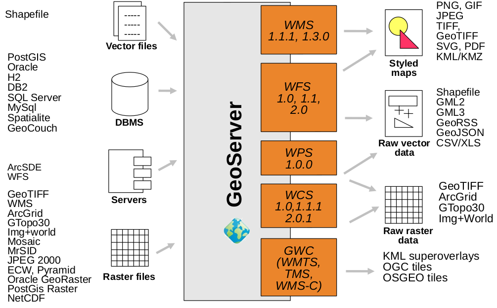
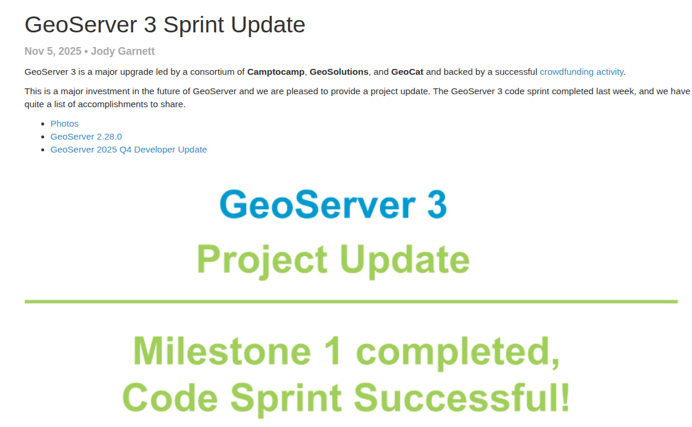
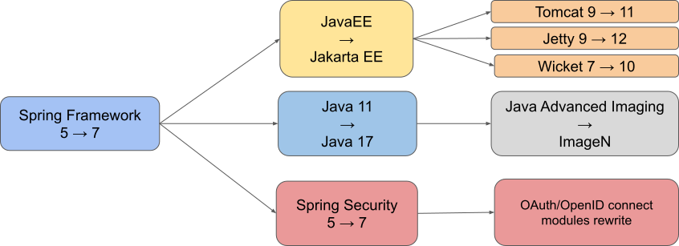
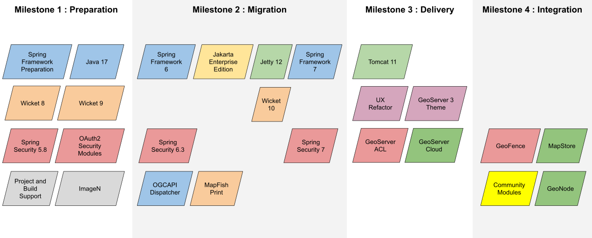

GeoServer 3
Der große technische Umbau
FOSSGIS 2026
Agenda
- GeoServer im Überblick
- Warum GeoServer 3?
- Der Weg zu GeoServer 3
- Was ist (wirklich) neu?
- Migration von 2.x → 3.x
Was ist GeoServer?
- Open-Source-Server für Geodaten (Java)
- Referenzimplementierung für OGC-Standards
- WMS, WFS, WCS, WMTS, WPS, OGC-API
- Web-Admin-Oberfläche, REST-API
- Plugin-Architektur, große Community
Kernfunktion
Datenquellen
- PostGIS, Oracle, SQL Server
- GeoTIFF, GeoPackage, Shapefile
- Cloud Optimized GeoTIFF
- WMS/WFS Cascading
Ausgabe
- OGC-Dienste
(WMS, WFS, …) - GeoWebCache / Tile-Caching
- SLD / CSS Styling
- REST-API für Automatisierung
GeoServer

Warum GeoServer 3?
- Technische Modernisierung der Plattform
- Java 17+ – Ende von Java 8/11 Support
- Spring 6 – Support für Spring 5 bereits abgelaufen
- Kompatibilität zu Tomcat 10/Jakarta EE
- Unterstützung für moderne Security-Integrationen
- Ersatz der veralteten Java Advanced Imaging (JAI) Bibliothek
Der Weg zu GeoServer 3

Der Weg zu GeoServer 3
Der Weg zu GeoServer 3

Crowdfunding
- Ziel: 550.000 €
- Start mit je 50.000 € aus 3er-Konsortium:
- Camptocamp
- GeoSolutions
- GeoCat
- 30+ Sponsoren weltweit
- Ziel übertroffen


Sponsoren

Der Weg zu GeoServer 3
- Okt 2025: Community Code Sprint in Italien

Zusammenfassung
| Wann | Was |
|---|---|
| Jan 2024 | Roadmap 2024 |
| Sep 2024 | Crowdfunding-Start |
| Jan 2025 | Finanzierungsziel bei 80% |
| Apr 2025 | Final Call (~90%) |
| Mai 2025 | Finanzierungsziel bei > 100% |
| Okt 2025 | Community Codesprint |
| Apr 2026 | Offizielles Release |
Die Spring-Lawine

Quelle: GeoServer 3 Crowdfunding
Viel Arbeit...

Der Plan

Quelle: GeoServer 3 Crowdfunding
Technologie: Alt vs. Neu
| Komponente | GeoServer 2.x | GeoServer 3 |
|---|---|---|
| Java | 8 / 11 / 17 | 17+ (min.) |
| Spring | 5.x | 6.2+ |
| Spring Security | 5.x | 6.5+ |
| Namespace | javax.* | jakarta.* |
| Bildverarbeitung | JAI / JAI-Ext | Eclipse ImageN |
| Web-UI | Wicket 9 | Wicket 10 |
Spring 6 & Jakarta EE
- Namespace-Wechsel:
javax.*→jakarta.* - Spring Security 6.5 – strengere Validierung
- URL-Dispatcher-Änderungen → betrifft GeoWebCache
- Apache Commons FileUpload: neue Dependencies
// GeoServer 2.x
import javax.servlet.http.HttpServletRequest;
// GeoServer 3
import jakarta.servlet.http.HttpServletRequest;Eclipse ImageN
- Ersetzt JAI 1.1.3 (letzte Aktualisierung ~2006)
- Moderne Bildverarbeitungs-Library
- Bessere Performance bei Raster-Daten
- Aktiv gepflegt, kompatibel mit aktuellen JVMs
- JAI-Ext wird perspektivisch abgelöst
Web-UI & Sicherheit
- Wicket 10 – modernere Oberfläche
- Content-Security-Policy (CSP) Headers
- HTML-Escaping bei GetFeatureInfo (Standard)
- OAuth2 OIDC (Google, GitHub, Azure, Keycloak)
- Master-Passwort-Verwaltung vereinfacht
- Root-Login steuerbar per Application Properties
Migration 2.x → 3.x
Überblick der Breaking Changes
| Bereich | Auswirkung |
|---|---|
| javax → jakarta | Alle eigenen Extensions betroffen |
| Java 17+ | Infrastruktur-Update nötig |
| Spring 6 | Code-Refactoring bei Plugins |
| OAuth2 → OIDC | Auth-Provider aktualisieren |
| JAI → ImageN | Raster-Extensions anpassen |
| Servlet-Container | Tomcat 10+ / Jetty 10+ |
Migration: Code & Extensions
- Alle eigenen Extensions müssen neu kompiliert werden
- OpenRewrite für automatisierte Jakarta-Migration
- Spring 6 API-Änderungen → manuelles Nacharbeiten
- Community-Module: passende Source-Builds nötig
- GeoFence-Migration noch in Arbeit (Milestone 3)
<!-- pom.xml: OpenRewrite Jakarta Migration -->
<plugin>
<groupId>org.openrewrite.maven</groupId>
<artifactId>rewrite-maven-plugin</artifactId>
<configuration>
<activeRecipes>
<recipe>org.openrewrite.java.migrate.jakarta.JavaxMigrationToJakarta</recipe>
</activeRecipes>
</configuration>
</plugin>Migration: Konfiguration
- Data Directory: Struktur bleibt kompatibel ✓
security/masterpw.infowird nicht mehr generiert- Umgebungsvariablen weiterhin unterstützt
- Neue Application Properties:
ROOT_LOGIN_ENABLEDGEOSERVER_NODE_OPTS(Git Branch)
- Data-Dir-Catalog-Loader → Core
Migrations-Checkliste
- ☐ Java 17+ installieren
- ☐ Servlet-Container aktualisieren (Tomcat 10+)
- ☐ Eigene Extensions auf jakarta.* portieren
- ☐ Spring 6 API-Kompatibilität prüfen
- ☐ OAuth2-Konfiguration auf OIDC umstellen
- ☐ Data Directory sichern & testen
- ☐ Raster-Workflows mit ImageN validieren
- ☐ Tiling & Caching-Szenarien testen
- ☐ High-Volume-Tests durchführen
Fazit
- GeoServer 3 = notwendige Modernisierung
- Solide technische Basis für die nächsten Jahre
- Migration erfordert Planung, aber:
- Data Directory bleibt kompatibel
- OpenRewrite automatisiert großen Teil
- Community-Testing läuft auf Hochtouren
- GA geplant für April 2026
Links & Ressourcen
Vielen Dank!
Fragen?
OGC API Support
- OGC API – Features (Kern)
- OGC API – Tiles (CITE-getestet)
- OGC API – Maps
- OGC API – Processes (Basis)
✓ CITE-Zertifizierung wiederhergestellt
(erstmals seit ~10 Jahren)
Neue Formate & Protokolle
Datenquellen
- GeoParquet (Community)
- PMTiles (Community)
- COG-Verbesserungen
- MBTiles-Updates
- Vector Mosaic Datastore
Ausgabe & Verarbeitung
- NetCDF-Output (WPS)
- Excel-Output (WPS)
- MapML für Layergruppen
- Vector-Tile-Rendering ↑
- WFS POST: 8KB-Limit behoben
Deployment
- Weiterhin: Binary, WAR, Windows-Installer
- Docker Multi-Arch (AMD64 + ARM64)
- ~40% bessere Preis-Performance auf ARM64 (Graviton)
- Tomcat 10+ / Jetty 10.x+ erforderlich
- docker.osgeo.org – offizielle Images
docker pull docker.osgeo.org/geoserver:3.0.0Sonstiges
- CORS
- Doku Markdown